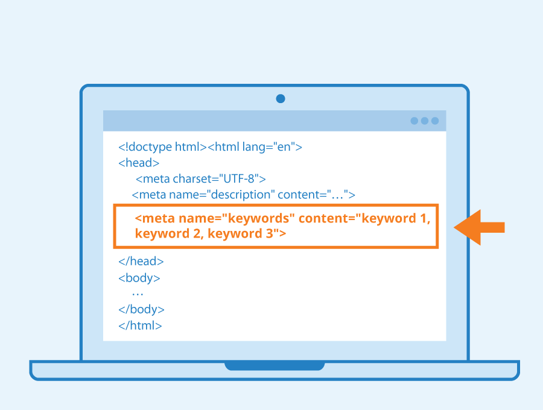

Proposito del sitio:
En este sitio web se encontrara con la informacion necesaria sobre
las etiquetas basicas de HTML, que atributos se manejan dentro del mismo,
al igual que los valores, los cuales son fundamentales para aprender
acerca de este maravilloso mundo.
Bienvenidos
Etiquetas basicas de HTML
La sintaxis que se aplica a las etiquetas y que se basa en los siguentes puntos:
- Las etiquetas se comportan como marcas que definen donde se coloca un contenido y que caracterisicas y aspectos va a tener ese contenido al mostrarse al navegador.
- la mayoria de las etiquetas (delimitadores o contenedores), se colocan dos veces, una delante del contenido que definen y otra despues el mismo.
- Hay algunas etiquetas (abiertas o unarias), que se colocan solo una vez, en el punto en el que se produce la accion que definen
- Las etiquetas disponen de atributos que modifican el significado de las mismas
La escritura de las etiquetas es siempre la misma, y se basa en los siguientes criterios:
- Las etiquetas de apertura, sse escriben entre los signos mayo que y menor que "< >"
- Las etiquetas de cierre se escribn con el sign mayo que y menor que y on el signo barra a la derecha delante de su nombre, " < / >"

Atributos y valores
Son las cualidades que lleva cada objeto, el cual esta especificado por cada etiqueta y deben ir como acompañantes en cada una de ellas.
- Los atributos pueden adquirir diferentes valores
- Los atributos se escriben, a continuacion del nombe de a etiqueta, separados por un espacio el uno del otro.
- Los valores se escriben entre comillas, a continuacion de su atributo y separados por el signo igual "="
- En las etiquetas de cierre no se vuelven a escribir los atributos ni sus valores
- El atributo color se escribe precedido del signo almohadilla "#"
